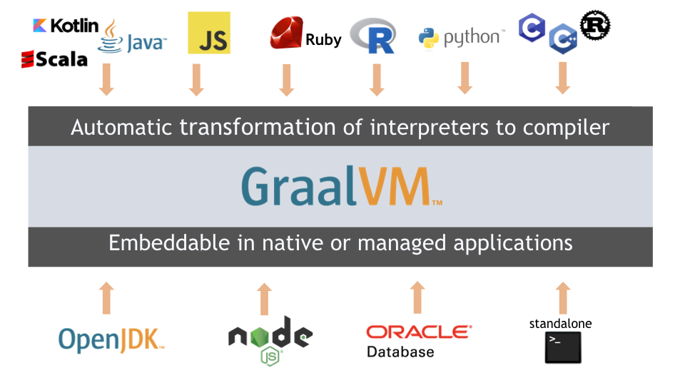
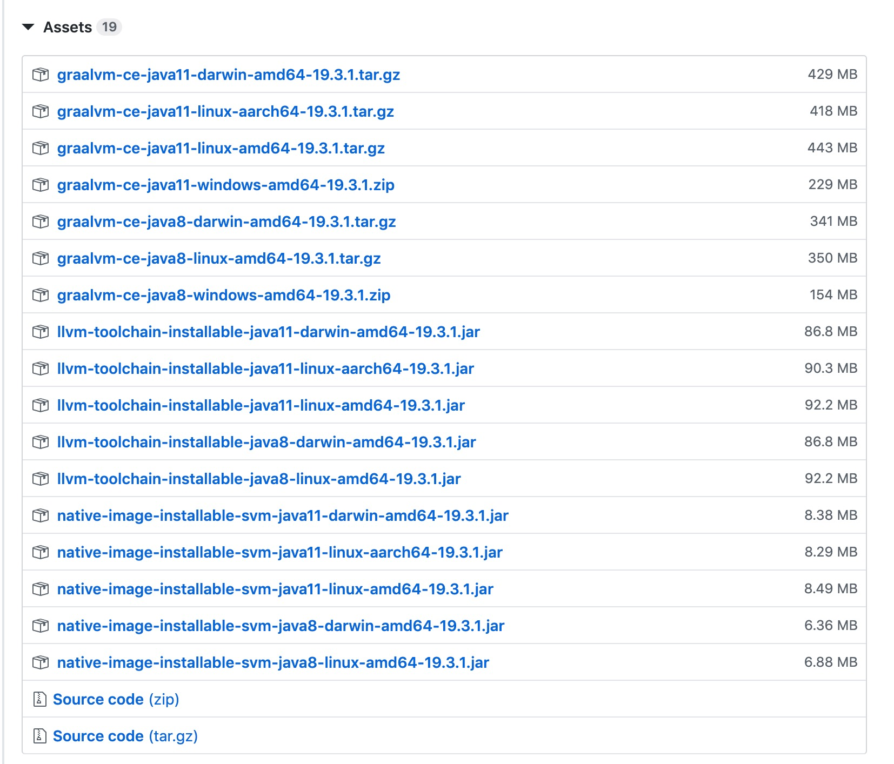

- 01 阅读此专栏的正确姿势.md.html
- 02 环境准备：千里之行，始于足下.md.html
- 03 常用性能指标：没有量化，就没有改进.md.html
- 04 JVM 基础知识：不积跬步，无以至千里.md.html
- 05 Java 字节码技术：不积细流，无以成江河.md.html
- 06 Java 类加载器：山不辞土，故能成其高.md.html
- 07 Java 内存模型：海不辞水，故能成其深.md.html
- 08 JVM 启动参数详解：博观而约取、厚积而薄发.md.html
- 09 JDK 内置命令行工具：工欲善其事，必先利其器.md.html
- 10 JDK 内置图形界面工具：海阔凭鱼跃，天高任鸟飞.md.html
- 11 JDWP 简介：十步杀一人，千里不留行.md.html
- 12 JMX 与相关工具：山高月小，水落石出.md.html
- 13 常见的 GC 算法（GC 的背景与原理）.md.html
- 14 常见的 GC 算法（ParallelCMSG1）.md.html
- 15 Java11 ZGC 和 Java12 Shenandoah 介绍：苟日新、日日新、又日新.md.html
- 16 Oracle GraalVM 介绍：会当凌绝顶、一览众山小.md.html
- 17 GC 日志解读与分析（基础配置）.md.html
- 18 GC 日志解读与分析（实例分析上篇）.md.html
- 19 GC 日志解读与分析（实例分析中篇）.md.html
- 20 GC 日志解读与分析（实例分析下篇）.md.html
- 21 GC 日志解读与分析（番外篇可视化工具）.md.html
- 22 JVM 的线程堆栈等数据分析：操千曲而后晓声、观千剑而后识器.md.html
- 23 内存分析与相关工具上篇（内存布局与分析工具）.md.html
- 24 内存分析与相关工具下篇（常见问题分析）.md.html
- 25 FastThread 相关的工具介绍：欲穷千里目，更上一层楼.md.html
- 26 面临复杂问题时的几个高级工具：它山之石，可以攻玉.md.html
- 27 JVM 问题排查分析上篇（调优经验）.md.html
- 28 JVM 问题排查分析下篇（案例实战）.md.html
- 29 GC 疑难情况问题排查与分析（上篇）.md.html
- 30 GC 疑难情况问题排查与分析（下篇）.md.html
- 31 JVM 相关的常见面试问题汇总：运筹策帷帐之中，决胜于千里之外.md.html
- 32 应对容器时代面临的挑战：长风破浪会有时、直挂云帆济沧海.md.html
16 Oracle GraalVM 介绍：会当凌绝顶、一览众山小
GraalVM 简介与特性
前面了解了那么多的 JVM 相关技术，我们可以发现一个脉络就是 Java 相关的体系越来越复杂，越来越强大。放眼看去，最近十年来，各种各类的技术和平台层出不穷，每类技术都有自己的适用场景和使用人群。并且伴随着微服务和云原生等理念的出现和发展，越来越多的技术被整合到一起。那么作为目前最流行的平台技术，Java/JVM 也自然不会在这个大潮中置身事外。本节我们介绍一个语言平台的集大成者 GraalVM：
- 从功能的广度上，它的目标是打通各类不同的语言平台，这样开发者可以博取众长，不同的团队、不同的模块能够使用不同的平台去做。（这也是目前微服务架构的一个流行趋势。试想一下：一个非常大的产品线，大家共同维护几十个不同功能、各自独立部署运行的服务模块，那么每个团队就可以按照自己的想法选择合适的语言和平台工具去做。但是随着业务的不断发展，模块一直在重构，分分合合，怎么办？Python 的算法服务、Node.js 的 REST 脚手架，怎么跟 Java 的模块产生联系？！）
- 从性能的深度上，它则可以把各类程序转换成本地的原生应用，脱离中间语言和虚拟机来执行，从而获得最佳的性能，包括运行速度和内存占用。
什么是 GraalVM
GraalVM 是 Oracle 开源的一款通用虚拟机产品，官方称之为 Universal GraalVM，是新一代的通用多语言高性能虚拟机。能执行各类高性能与互操作性任务，在无需额外开销的前提下允许用户构建多语言应用程序。
官方网站为：
GraalVM 有什么特点
GraalVM 既可以独立运行，也可以在不同的部署场景中使用，比如在 OpenJDK 虚拟机环境、Node.js 环境，或者 Oracle、MySQL 数据库等环境中运行。下图来自 GraalVM 官网，展示了目前支持的平台技术。

GraalVM 支持大量的语言，包括：
- 基于 JVM 的语言（例如 Java、Scala、Groovy、Kotlin、Clojure 等）；
- 基于 LLVM 的语言（例如 C、C++ 等语言）；
- 动态语言，例如 JavaScript、Ruby、Python、R 语言等等。
包括以下动态语言引擎：
- JavaScript 引擎：Graal.js 是一款 JavaScript 解释器/编译器，能够在 JVM 上运行 Node.js 应用；
- FastR 引擎：这是 R 语言解释器/编译器；
- RubyTruffle 引擎：支持 Ruby 且性能优于 Ruby。
GraalVM 支持哪些特性呢？
- 编译质量和执行性能更高，不管是 Java、Ruby 还是 R 语言，GraalVM 的编译器编译出来的代码，性能都更强悍
- 开发中可以组合 JavaScript、Java、Ruby 和 R 语言
- 在 GraalVM 上运行本地语言
- 开发适用于所有编程语言的通用工具
- 扩展基于 JVM 的应用程序
- 扩展本地应用程序
- 将 Java 程序编译之后作为本地库，供其他程序链接和调用
- 在数据库环境中支持多种语言，主要是 Oracle 和 MySQL 数据库环境
- 在 GraalVM 的基础上，我们甚至可以创建自己的语言
- 对于 Node.js 开发者来说，GraalVM 环境支持更大的堆内存，而且性能损失很小
- 程序的启动时间更短
- 占用内存更低
启动时间对比：
占用内存对比：
解决了哪些痛点
GraalVM 提供了一个全面的生态系统，消除编程语言之间的隔离，打通了不同语言之间的鸿沟，在共享的运行时中实现了互操作性，让我们可以进行混合式多语言编程。
用 Graal 执行的语言可以互相调用，允许使用来自其他语言的库，提供了语言的互操作性。同时结合了对编译器技术的最新研究，在高负载场景下 GraalVM 的性能比传统 JVM 要好得多。
GraalVM 的混合式多语言编程可以解决开发中常见的这些问题：
- 那个库我这个语言没有，我就不得不自己撸一个；
- 那个语言最适合解决我这个问题，但是我这个环境下跑不起来；
- 这个问题已经被我的语言解决了，但是我的语言跑起来太慢了；
- 通过使用 Polyglot API，GraalVM 要给开发者带来真正的语言级自由。
开发人员使用自己最擅长的语言来编程，提高生产力的同时，更有希望赢得市场。
跨语言的工作原理
GraalVM 提供了一种在不同语言之间无缝传值的方法，而不需要像其它虚拟机一样进行序列化和反序列化。这样就保证了跨语言的零开销互操作性，也就是说性能无损失，所以才号称高性能虚拟机。
GraalVM 开发了“跨语言互操作协议”，它是一种特殊的接口协议，每种运行在 GraalVM 之上的语言都要实现这种协议，这样就能保证跨语言的互操作性。语言和语言之间无须了解对方就可以高效传值。该协议还在不断改进中，未来会支持更多特性。
弱化主语言
GraalVM 开发了一个实验性的启动器 Polyglot。在 Polyglot 里面不存在主语言的概念，每种语言都是平等的，可以使用 Polyglot 运行任意语言编写的程序，而不需要前面的每种语言单独一个启动器。Polyglot 会通过文件的扩展名来自动分类语言。
Shell
GraalVM 还开发了一个动态语言的 Shell，该 Shell 默认使用 JS 语言，可以使用命令切换到任意其它语言进行解释操作。
将 Java 程序编译为可执行文件
我们知道，Hotspot 推出之后，号称达到了 C++ 80% 的性能，其关键诀窍就在于 JIT 即时编译。
稍微推测一下，我们就会发现高性能的诀窍在于编译，而不是解释执行。
同样的道理，如果能够把 Java 代码编译为本地机器码，那么性能肯定也会有一个很大的提高。
恰好，GraalVM 就有静态编译的功能，可以把 Java 程序编译为本地二进制可执行文件。
GraalVM 可以为基于 JVM 的程序创建本地镜像。 镜像生成过程中，通过使用静态分析技术，从 Java main 方法开始，查找所有可以执行到的代码，然后执行全量的提前编译（AOT，ahead-of-time）。
生成的二进制可执行文件，包含整个程序的所有机器码指令，可以快速启动和执行，还可以被其他程序链接。
编译时还可以选择包含 GraalVM 编译器，以提供额外的即时（JIT）编译支持，从而高性能地运行任何基于 GraalVM 的语言。
为了获得额外的性能，还可以使用在应用程序的前一次运行中收集的配置文件引导优化来构建本机映像。下文可以看到如何构建本地映像的示例。
在 JVM 中运行应用程序需要启动过程，会消耗一定的时间，并且会额外占用一些内存。但通过静态编译之后的程序，相对来说占用内存更小、启动速度也更快。
GraalVM 组件
GraalVM 由核心组件和附加组件组成，打包在一起提供下载，GraalVM 当前最新版本是 19.3.1，是一款独立部署的 JDK。也包含一个共享的运行时，用于执行 Java 或基于 JVM 的语言（如 Scala、Kotlin）、动态语言（如 JavaScript、R、Ruby、Python）和基于 LLVM 的语言（如 C、C++）。
- 运行时：主要是 Java 运行时系统和 NodeJS 运行时系统
- 库文件：比如编译器，JavaScript 解释器，LLVM 字节码（bitcode）执行器，Polyglot API 等。
- 工具：JavaScript REPL 环境、LLVM 相关的命令行工具、支持其他语言的安装程序。
下载与安装
GraalVM 支持 Docker 容器，本文不进行介绍，相关信息请参考：
下面我们来看看怎么在开发环境下载和安装。
\1. 打开官方网站：
\2. 找到下载页面：
从下载页面中可以看到，GraalVM 分为社区版和企业版两种版本。
社区版（Community Edition）
很明显，社区版是免费版本，提供基于 OpenJDK 8 和 OpenJDK 11 的版本，支持 x86 架构的 64 位系统：包括 macOS、Linux 和 Windows 平台。
需要从 GitHub 下载。下载页面为：
企业版（Enterprise Edition）
企业版提供基于 Oracle Java 8 和 Oracle Java 11 的版本，主要支持 macOS 和 Linux 系统，Windows 系统的 GraalVM 企业版还是实验性质的开发者版本。
每个授权大约 1000~1500 人民币，当然，基于 Oracle 的习惯，大家是可以免费下载和试用的。
需要从 OTN（Oracle TechNetwork）下载：
https://www.oracle.com/technetwork/graalvm/downloads/index.html
根据需要确定对应的版本，比如我们选择社区版。
社区版的组件包括：
- JVM
- JavaScript Engine & Node.js Runtime
- LLVM Engine
- Developer Tools
从 GitHub 下载页面 中找到下载链接。
如下图所示：

这里区分操作系统（macOS/darwin、Linux、Windows）、CPU 架构（AArch64、AMD64（Intel/AMD））、以及 JDK 版本。 我们根据自己的系统选择对应的下载链接。
比如 macOS 系统的 JDK 11 版本，对应的下载文件为：
# GraalVM 主程序绿色安装包
graalvm-ce-java11-darwin-amd64-19.3.1.tar.gz
# llvm-toolchain 的本地安装包；使用 gu -L 命令
llvm-toolchain-installable-java11-darwin-amd64-19.3.1.jar
# native-image 工具的本地安装包；使用 gu -L 命令
native-image-installable-svm-java11-darwin-amd64-19.3.1.jar
Windows 系统则只提供单个 zip 包下载：
# JDK11 版本
graalvm-ce-java11-windows-amd64-19.3.1.zip
# JDK8 版本
graalvm-ce-java8-windows-amd64-19.3.1.zip
然后右键另存为即可。
因为 GitHub 的某些资源可能被屏蔽，这里可能需要一点技巧。
如果下载不了，可以求助小伙伴，或者加入我们的交流群。或者试试下载 Oracle 的企业版，或者试试迅雷。
下载完成后进行解压，解压之后会发现这就是一个 JDK 的结构。
好吧，会使用 Java 的我，表示使用起来没什么压力。
进到解压后的 bin 目录，查看版本号：
# 注意这里是笔者的目录
cd graalvm-ce-java11-19.3.1/Contents/Home/bin/
# 看 Java 版本号
./java -version
openjdk version "11.0.6" 2020-01-14
OpenJDK Runtime Environment GraalVM CE 19.3.1 (build 11.0.6+9-jvmci-19.3-b07)
OpenJDK 64-Bit Server VM GraalVM CE 19.3.1 (build 11.0.6+9-jvmci-19.3-b07, mixed mode, sharing)
和 JDK 使用起来没多少差别，是吧？
如果是独立的环境，还可以执行设置 PATH 环境变量等操作。
解压后的 bin 目录下，除了 JDK 相关的可执行文件之外，还有：
- js 这个文件可以启动 JavaScript 控制台，类似于 Chrome 调试控制台一样的 REPL 环境。CTRL+C 退出。
- node 这是嵌入的 Node.js，使用的是 GraalVM 的 JavaScript 引擎。
- lli 官方说这是 GraalVM 集成的高性能 LLVM bitcode interpreter。
- gu 全称是 GraalVM Updater，程序安装工具，比如可以安装 Python、R 和 Ruby 的语言包。
使用示例
官方为各种语言提供了 GraalVM 相关的介绍和开发者文档：
Java 用法
下载并解压之后，只需要设置好 PATH，即可用于 Java 开发。
看官方的示例代码：
public class HelloWorld {
public static void main(String[] args) {
System.out.println("Hello, World!");
}
}
这里为了省事，我们干点 stupid 的事情，读者理解意思即可，试验时也可以像我这样折腾。
# 查看当前目录
$ pwd
/Users/renfufei/SOFT_ALL/graalvm-ce-java11-19.3.1/Contents/Home/bin
# 查看源文件
$ cat HelloWorld.java
public class HelloWorld {
public static void main(String[] args) {
System.out.println("Hello, World!");
}
}
然后进行编译和执行：
# 查看当前目录
$ pwd
/Users/renfufei/SOFT_ALL/graalvm-ce-java11-19.3.1/Contents/Home/bin
# 编译
$ ./javac HelloWorld.java
# 执行程序
$ ./java HelloWorld
Hello, World!
OK，程序正常输出。
更多示例请参考：
官方的示例还是很有意思的，对于提升我们的开发水平有一些帮助。
JS 的用法
执行 JS 的 REPL 调试环境：
$ ./js
> 1 + 1
2
想要退出，按 CTRL+C 即可。
查看 node 和 npm 的版本号：
$ ./node -v
v12.14.0
$ ./npm -v
6.13.4
接下来就可以和正常的 Node.js 环境一样安装各种依赖包进行开发和使用了。
更多程序，请参考：
https://www.graalvm.org/docs/getting-started/#running-javascript
LLVM 的用法
根据官方的示例：
https://www.graalvm.org/docs/getting-started/#running-llvm-bitcode
我们执行以下命令来安装 LLVM 相关工具：
$ ./gu install llvm-toolchain
Downloading: Component catalog from www.graalvm.org
Processing Component: LLVM.org toolchain
Downloading: Component llvm-toolchain: LLVM.org toolchain from github.com
[ ]
如果下载速度比较慢的话，这里得等好长时间，这里没有进度条显示，不要着急。
如果因为网络问题安装失败，也可以下载后使用本地的 jar 文件安装：
./gu -L install ../lib/llvm-toolchain-installable-java11-darwin-amd64-19.3.1.jar
其中 -L 选项，等价于 --local-file 或者 --file，表示从本地文件安装组件。只要路径别填写错就行。
安装 llvm-toolchain 完成之后，查看安装路径，并配置到环境变量中：
$ ./lli --print-toolchain-path
/Users/renfufei/SOFT_ALL/graalvm-ce-java11-19.3.1/Contents/Home/languages/llvm/native/bin
$ export LLVM_TOOLCHAIN=$(./lli --print-toolchain-path)
$ echo $LLVM_TOOLCHAIN
/Users/renfufei/SOFT_ALL/graalvm-ce-java11-19.3.1/Contents/Home/languages/llvm/native/bin
注意这里我偷懒，没配置 PATH，所以使用了 ./lli。
创建一个 C 程序文件，内容示例如下：
cat hello.c
#include <stdio.h>
int main() {
printf("Hello from GraalVM!\n");
return 0;
}
然后就可以编译和执行 bitcode 了：
# 编译
$ $LLVM_TOOLCHAIN/clang hello.c -o hello
# 执行
$ ./lli hello
Hello from GraalVM!
安装其他工具和语言开发环境
安装 Ruby
安装文档请参考：
./gu install ruby
安装 R
安装文档请参考：
./gu install R
安装 Python
安装文档请参考：
https://www.graalvm.org/docs/getting-started/#running-python
./gu install python
启动 Python：
graalpython
编译 Java 程序为可执行文件
首先需要安装 native-image 工具，参考：
https://www.graalvm.org/docs/reference-manual/native-image/#install-native-image
安装好之后就可以根据文档来使用了，就比如前面的 HelloWorld 程序。
// HelloWorld.java
public class HelloWorld {
public static void main(String[] args) {
System.out.println("Hello, World!");
}
}
编译并执行：
# Javac 编译
$ javac HelloWorld.java
# 编译为本地可执行程序
$ native-image HelloWorld
# 直接执行
$ ./helloworld
Hello, World!
看到这里，同学们可以不妨自己动手试试，把自己的 Spring Boot 之类的项目，用 GraalVM 打包成可执行文件（目前还不支持 Windows 版本）。再看一下启动时间，有惊喜哦。
参考文档：
组合各种语言
请参考文档：